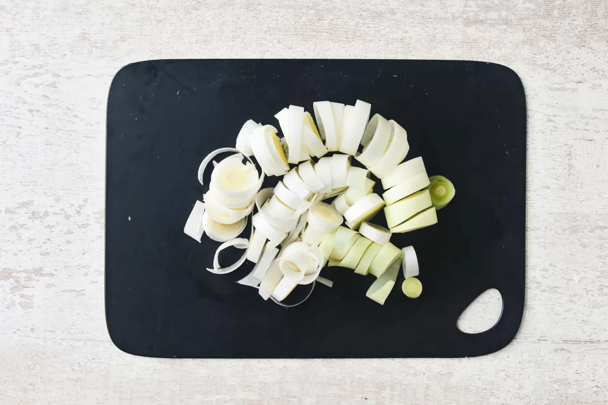
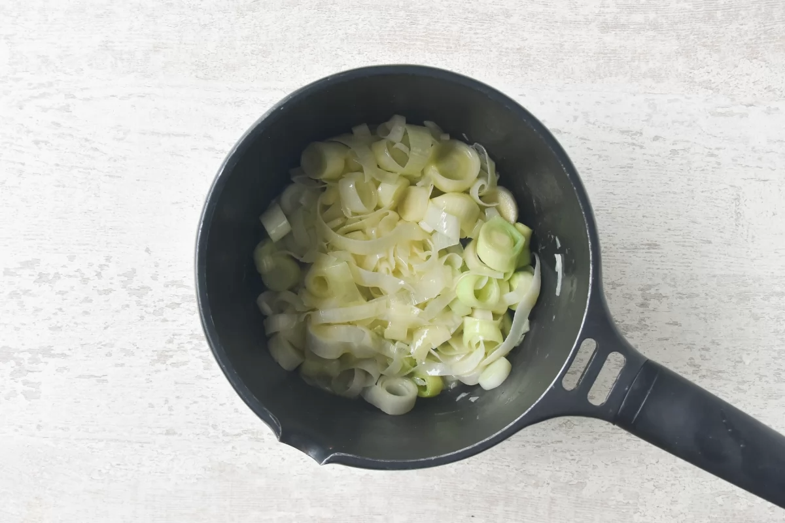
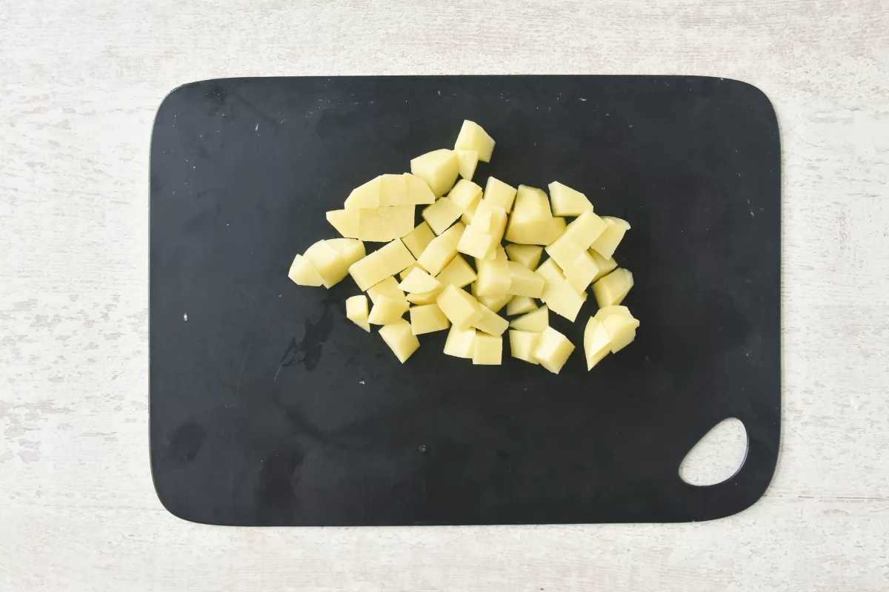
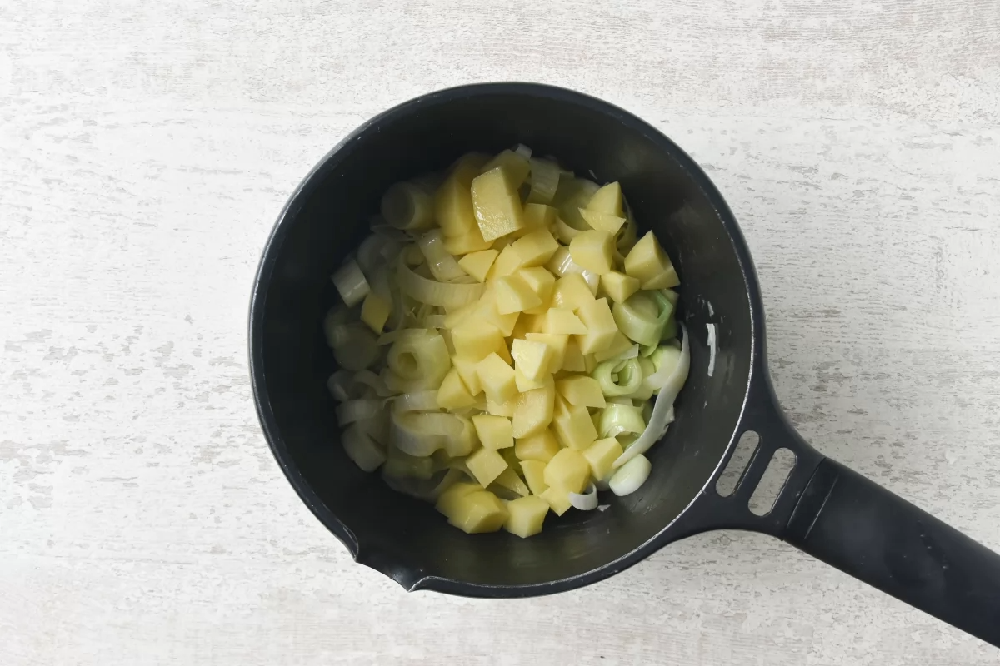
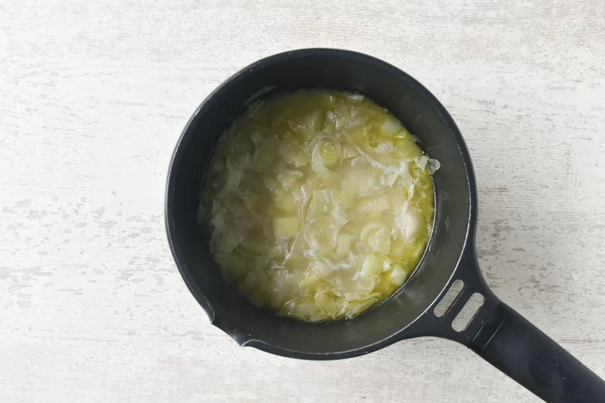
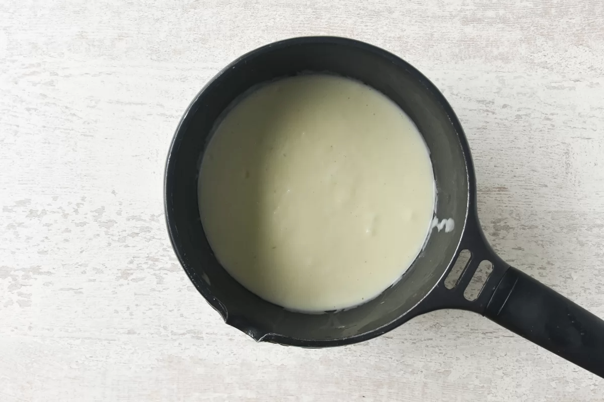
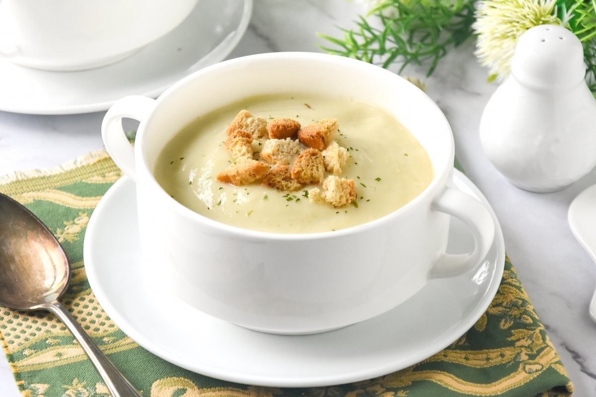

Tornar a l'inici
Vichyssoise
Index de contiguts
Ingredients
- 2 puerros
- 30 g de mantequilla
- 200 g de patatas
- Sal
- Pimienta blanca molida
- 400 ml de caldo de verduras
- 100 ml de nata para cocinar
Pas a pas
- Lavamos 2 puerros y cortamos la parte blanca a rodajas.

- Calentamos 30 g de mantequilla en un cazo y sofreímos el puerro durante 6 minutos a fuego medio, no debe coger color.

- Pelamos 200 g de patatas y las cortamos en dados.

- Incorporamos las patatas al cazo y salpimentamos. Removemos 2 minutos el conjunto.

- Vertemos 400 ml de caldo de verduras (debe cubrir las verduras) y llevamos a ebullición. Bajamos el fuego y cocinamos durante 20 minutos, hasta que las patatas estén tiernas (podemos comprobarlo pinchándolas con la punta de un cuchillo).

- Trituramos hasta obtener un puré homogéneo. Agregamos 100 ml de nata para cocinar, removemos, probamos y salpimentamos al gusto. Servimos la vichyssoise fría o caliente.

Resultat Final

Tornar a l’encapçalament principal